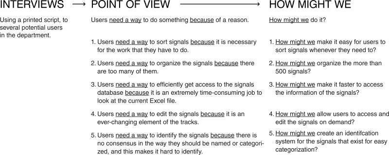
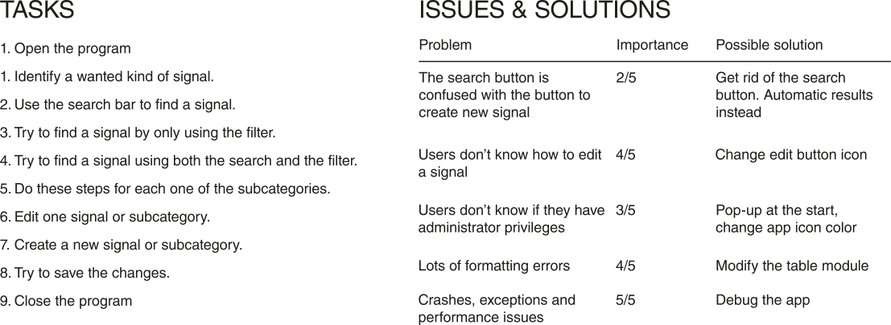

Thales Group
.NET Core at full-stack using Visual Studio:
C# (backend)
Figma, XAML, WPF (frontend)
Backend Developer & UI/UX Designer (Full-Stack)
Windows 7 to Windows 11
Jun 2019 - Dec 2020 (5 months)
NOTE: For confidentiality reasons, all application and process names have been modified so as not to reflect any actual data.
Thales Group is a French multinational company that designs and builds electrical systems and provides services for the aerospace, defence, transportation and security markets. I was part of the railway division of the company, and my department was responsible for implementing the signaling and producing the necessary documentation to install and maintain it. The problem was that this process was long and tedious. In my team, I helped in the complete full stack development of several Windows applications that made life easier for my colleagues in this task. In this instance, I will focus on one in particular, called Signal. With this project, I want to demonstrate my skills to harmonize logic and design; backend and frontend, given the resources and time I had available. The final output was a fully functional Windows app.
Signal was born as a response to a problem of the department, which needed an application to manage the different types of signals that exist on the train tracks. A Design-Thinking process was used to design, develop and implement every app, or improve the already existing ones, being Signal a good example of its use.
Interviews were perfomed in the context of user narration exercises. These exercises led to the generation of point of view sentences that materialized the needs and the reasons behind them. The how might we's proposed solutions for these challenges.
I made several sketches of the UI after getting an idea of how the application logic would look like. It would have a main window with the signals, and a series of secondary tabs to view its components (lamps, add-ons and systems). In addition, each of these signals could be edited in a modal pop-up window, which could also be used to create new signals or components of these signals.
It was very important to make a user flow diagram to be clear about the different functionalities of the application and how they would be integrated with the designed logic. The most important part was to edit or query, depending on the type of privileges available to the user in question.
In this case, the .NET and WPF made it very easy to follow the diagram to the letter, giving the possibility to integrate and reuse the different UI modules in the windows.
As the application had to be developed full-stack, I also had a role in developing the logic of it. Here, I show a brief diagram of how the logic was implemented. I used the MVVM, or Model-View-ViewModel pattern as a base for the program. I also show a brief model of the lamp class.
User tests were performed with the first functional prototypes of the application. The simplicity of the logic and the urgency of the application meant that functionality was superimposed on the usability or good design of the application. After these tests, the application could be refined to what it is today.
The tests consisted of asking users to perform a series of functions with the application. After this, errors and suggestions were noted and the process was repeated several times. Some of the many tasks and problems of the first iteration are shown here.
The final result was used by my colleagues and refined until it got to what is shown here. I have decided to include this application as a simple example of integration between user interface design and logic, which can be applied in any other field of UI/UX.